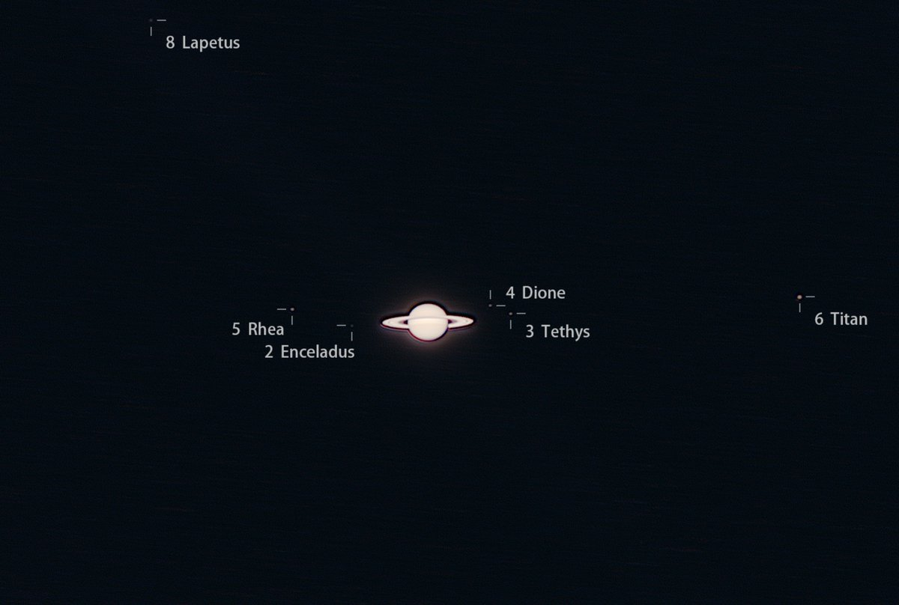

Rain Antares🏳️⚧️🍥
@Rain_Antar1121
@mizuame_t2 居然能拍出土卫六圆面吗😨呜呜呜呜羡慕…话说土星圆面好像还是有点色差，用ADC了嘛～
拍得到土卫七才怪嘞～它本来就是前八个土卫里最暗的嘛，只有14等多…不仅是最小的，而且反照率奇低无比喵，虽然本质是冰卫但表面覆盖了一层光谱接近土卫八暗面的漆黑物质，有推测认为来自土卫九喵

水母雨🍥
@mizuame_t2
土星大家族~
最大的卫星土卫六可以拍出肉红色的圆面，而另外五颗卫星都只是微小的光点
土卫一刚好从土星面前经过，太小了看不见，土卫七则神秘失踪了w https://t.co/BcWHa7er9e